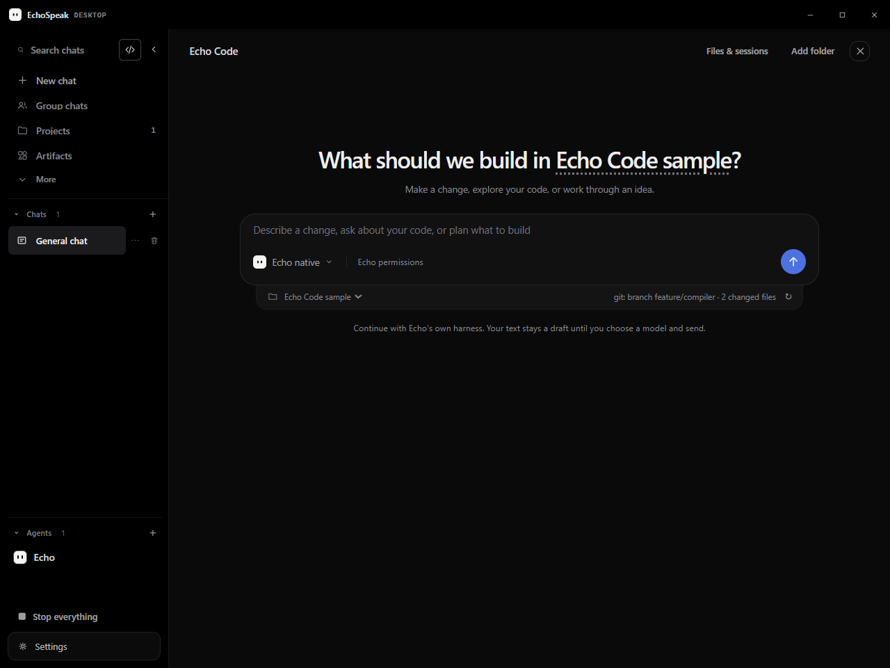
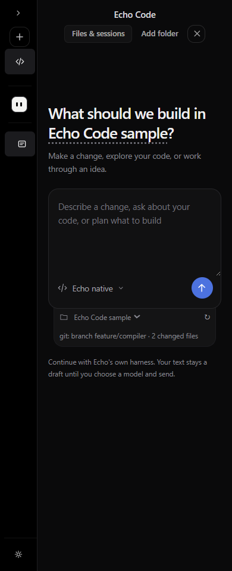
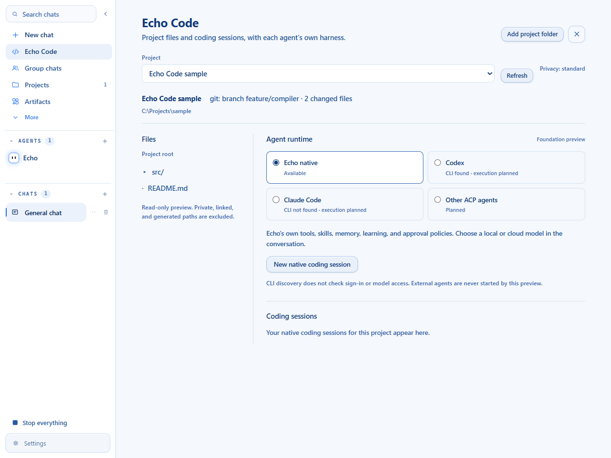
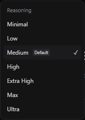
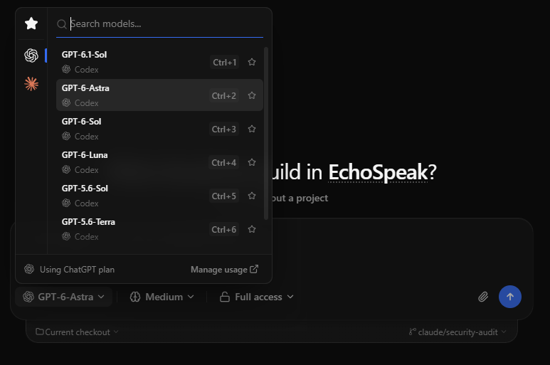
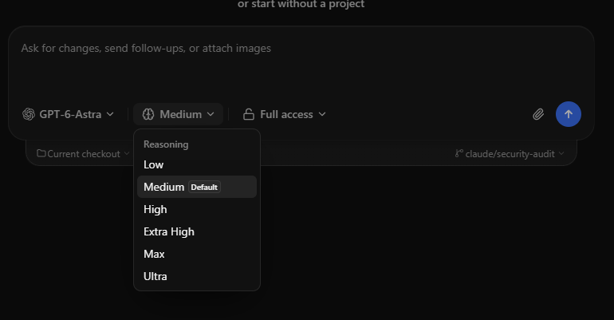

Echo Code
Workspace foundation, reference-directed styling, and independent runtime architecture · 25 October 2026
A quieter workspace inside EchoSpeak Implemented
A centered starting composer, charcoal surfaces, compact navigation, and an attached checkout strip adapt the supplied reference to Echo's own identity. Native Chat and Code share the same composer and model controls.

Functionality kept visible
- The runtime choice stays independent of model choice.
- A task becomes a draft in a native coding session; choose a model and send it there.
- Files and coding sessions remain available from the compact workspace action.
- Private/Offline mode and external launch restrictions remain explicit.
- Saved appearance preferences remain in use; new profiles start in dark mode.

Initial foundation layout before the supplied style direction

The same visual language for model and reasoning selection


The shared popup stays within the viewport, supports keyboard navigation, restores focus, and closes with Escape or an outside click. Existing voice, thinking and conversation options remain accessible.
User-supplied popup references


One application, independent agent harnesses
The shared layer controls sessions, workspace association and presentation. Each selected runtime keeps its own reasoning loop, tools, authentication and native history. Echo's local model does not supervise another agent.
Reuse proven boundaries, preserve one owner of application state
| Reuse / adapt | Decision |
|---|---|
| EchoSpeak foundations | Reuse the current project and native thread stores, file preview, query stream, approvals, composer and model settings. The completed slice introduces no replacement harness. |
| T3 source and tests | Adapt lifecycle edge cases, permission mappings, account isolation, streaming normalization and Git workflow tests. Its Effect/TypeScript contracts require adaptation to Echo's Python backend. |
| Codex client | Evaluate the official Python SDK over app-server before writing a custom transport or adding a Node sidecar. Authentication and model access remain provider-owned. |
| Claude Code | Keep the original binary and its own sign-in. Published CLI and SDK integration terms distinguish end-user binary login from an application's OAuth/token handling. |
| T3 application server | Do not adopt a second event/state server, remote account system or complete Electron application just to add the first runtime. |
Research pins 22 T3 source files to commit c9162617. No T3 runtime code was ported in this foundation. The technical record includes primary sources, the complete MIT notice, compatibility analysis and the source-hash manifest.
The next practical steps
| Phase | Concrete exit evidence |
|---|---|
| Completed Foundation | Dedicated workspace, native Code sessions, passive runtime catalog, fail-closed admission, reference-directed UI and deterministic checks. |
| Codex vertical slice | Pin and validate the official client, then implement owned process lifecycle, native thread mapping, streaming, interrupts and correlated human approvals. User verifies real login, turn, denial and restart. |
| Git development workflow | Explicit worktrees and diffs, one writer per checkout, preserved dirty files and coordinated filesystem/conversation rollback. |
| Claude and ACP clients | Original harness integration under the applicable terms, then negotiated ACP capabilities with the same execution and privacy boundaries. |
| Independent Echo ACP export | A facade over Echo's existing loop, with root ownership, approval bridging, cancellation and honest advertised capabilities. T3 interoperability requires an actual client test. |
What the evidence establishes
Verified in source and isolated checks
- 168 combined backend tests passed; one Windows symlink test skipped.
- 180 frontend tests, TypeScript, 16 desktop checks and 4 Rust tests passed.
- Headless fixture checks exercised files, native session routing, drafts, runtime blocking and keyboard popup interactions.
- Wide/narrow dark layouts and the light layout had no workspace overflow or page exceptions.
- Fresh OSV scan: 1,130 locked packages; 0 new advisories; 17 reviewed findings.
Still requires real acceptance
- Native model testing and installed Tauri appearance are left to the user.
- Local Windows build results and commands are in the technical record.
- No Codex/Claude login or inference was attempted.
- No external runtime execution, enforced child-process isolation or Git rollback is implemented.
- The production build retains Vite's large-chunk advisory.
Local Windows testing instructions · Combined security implementation review
11.10.5 UI refinement: header, compact composer, connected models and voice